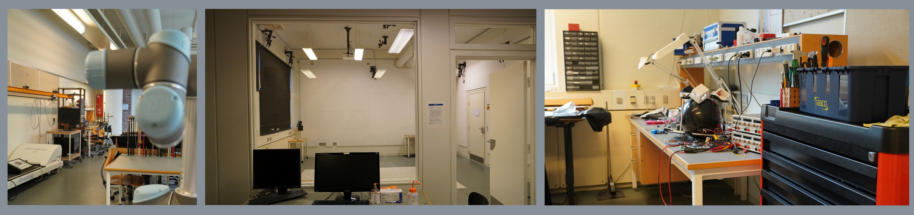
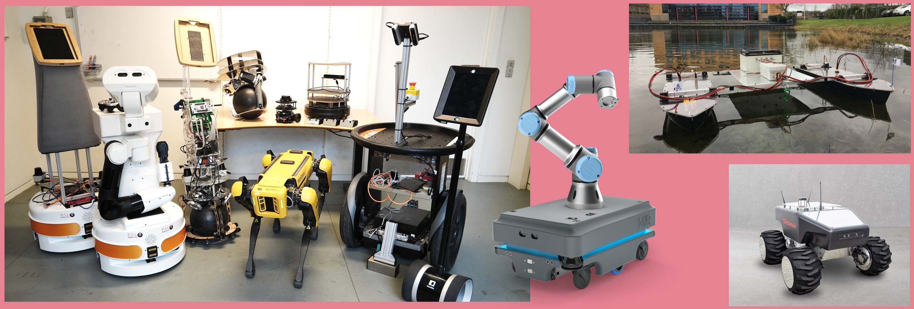

Robust Robotics Lab
Test facilities and laboratories
The Robotics Lab at the Department of Electronic System at Aalborg university provides a 300 square meter general purpose labs providing the researchers with the necessary means for designing and conducting experiments. This includes specialized laboratory spaces for robot construction and testing, equipped with advanced features such as Vicon motion capture system for providing ground truth in experiments.
|  |
Robotic Systems
|  |
The Robust Robotics Lab offers a diverse fleet of autonomous robot platforms for research. This includes advanced models like PAL TIAGo, Boston Dynamics Spot, and Robotnik Summit XL, as well as Segway RMP200 and Double Robotics Double. Additionally, we provide several educational platforms, such as Turtlebot and Zumobots, and our custom-designed ballbot, Kugle.